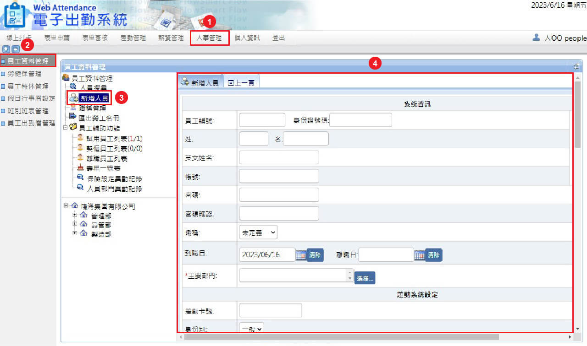
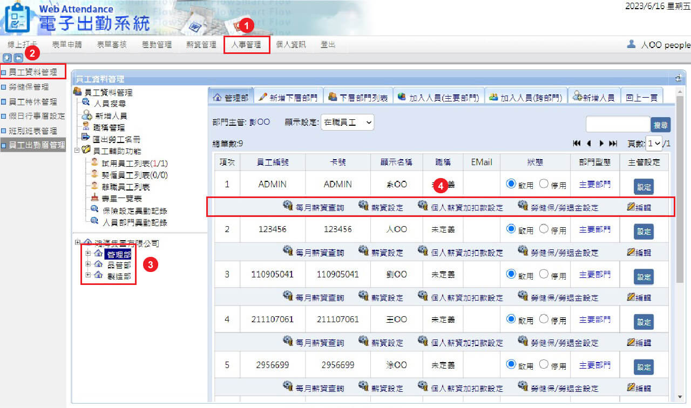
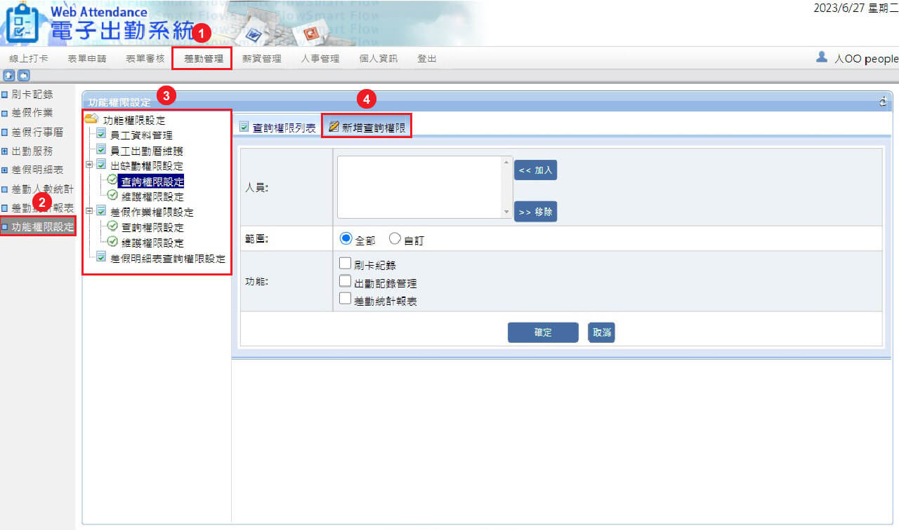
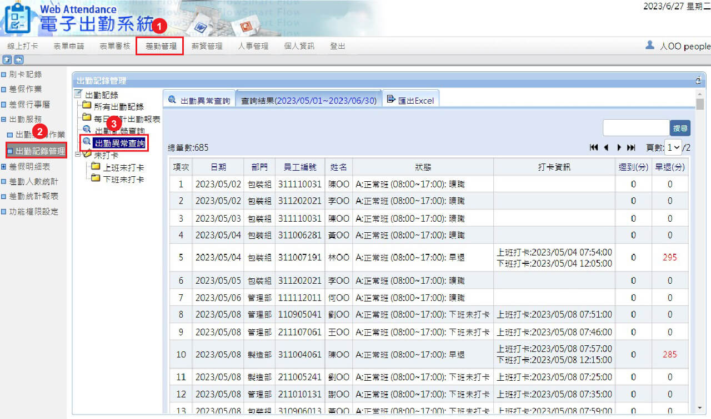
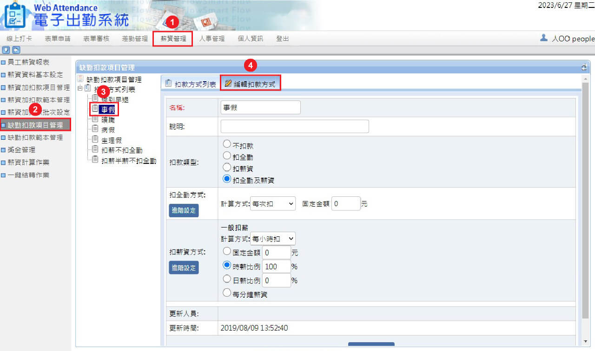

登入系統後，可能會對多樣化的功能感到陌生、不知從開始。Class 365 集合了幾個關鍵的問題與操作說明，協助你更了解系統邏輯、更順利地使用系統功能。
系統大致由以下三個功能組成，在進行差勤紀錄與薪資計算之前，必須完成前兩個步驟，才能產出正確的差勤紀錄與計算出正確的薪資。
- 基本資料設定
- 設定權限
- 查詢與維護
基本資料設定
1.人事管理 > 2.員工資料管理 > 3.新增人員 > 4.填寫內容
首先，至「人事薪資」建立員工基本資料，須留意以下項目有無遺漏，如未設定將影響到後續能否產生差勤紀錄、以及無法進行薪資結轉。
- 預設班別：未設定將無法產生差勤資料
- 薪資加扣款範本
- 缺勤扣款範本
建立資料後，點選 3. 樹狀圖中的部門，在 4.區域中可設定「勞健保/勞退」、「薪資設定」、「薪資加扣款設定」等，須注意「薪資設定」如未設定，將無法進行薪資結轉。
設定權限
1.差勤管理 > 2.功能權限設定 > 3.權限類別 > 4.新增查詢權限
選擇 3. 樹狀圖中的預設定的權限類別，在 4.區域中新增人員、可使用功能等。
查詢與維護
完成基本資料、權限設定以上兩步驟後，可至「差勤管理」與「薪資管理」中查詢紀錄、維護相關功能，如下：
1.差勤管理 > 2.出勤記錄管理 > 3.出勤異常查詢
1.薪資管理 > 2.缺勤扣款項目管理 > 3.類型/假別 > 4.編輯扣款方式